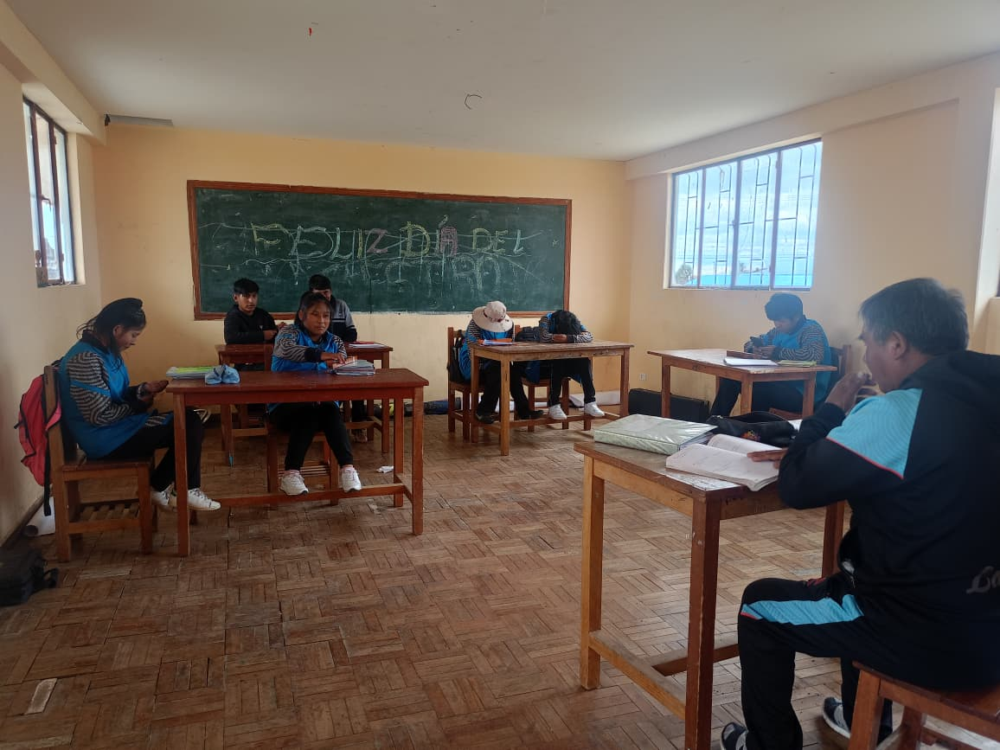

ASIGNATURAS PRINCIPALES
- Lengua y Literatura
- Matemáticas
- Ciencias Naturales
- Ciencias Sociales
- Educación Física
- Sistemas Informaticos
¡BIENVENIDOS A TERCERO DE SECUNDARIA!
En esta etapa se refuerzan los aprendizajes adquiridos y se fomenta la participación activa en actividades académicas, culturales y tecnológicas que fortalecen el trabajo en equipo y la responsabilidad.
Galería del Curso
